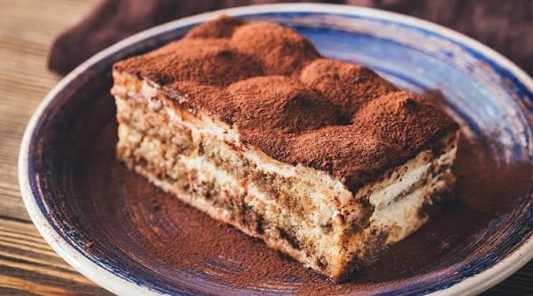

Tiramisu

Photo by Adobe AlexPro9500
Description
Tiramisu is a classic Italian dessert made with layers of coffee-soaked ladyfinger biscuits, a rich and creamy mascarpone filling, and a dusting of cocoa powder. It has a light, velvety texture and a perfect balance of sweet, creamy, and slightly bitter coffee flavors. This no-bake dessert is ideal for special occasions or as an elegant treat after dinner.
Ingredients
For the Filling
- 500 g (18 oz) mascarpone cheese
- 300 ml (1¼ cups) heavy whipping cream
- 100 g (½ cup) granulated sugar
- 1 teaspoon vanilla extract
For the Layers
- 250 g ladyfinger biscuits (savoiardi)
- 250 ml (1 cup) strong brewed espresso or coffee, cooled
- 2 tablespoons coffee liqueur (optional)
For Garnish
- 2 tablespoons unsweetened cocoa powder
- Dark chocolate shavings (optional)
Steps
- Prepare the Coffee Brew a cup of strong espresso or coffee and allow it to cool completely. Stir in the coffee liqueur if using.
- Make the Cream Filling In a large bowl, whip the heavy cream until soft peaks form. In another bowl, combine the mascarpone cheese, sugar, and vanilla extract until smooth. Gently fold the whipped cream into the mascarpone mixture until fully combined.
- Assemble the Tiramisu Quickly dip each ladyfinger into the cooled coffee for 1–2 seconds. Do not soak them. Arrange a layer of dipped ladyfingers in the bottom of a serving dish. Spread half of the mascarpone mixture evenly over the ladyfingers. Repeat with another layer of dipped ladyfingers and the remaining mascarpone mixture.
- Chill Cover the dish and refrigerate for at least 6 hours, preferably overnight, to allow the flavors to develop and the dessert to set.
- Finish and Serve Just before serving, dust the top generously with unsweetened cocoa powder. Add dark chocolate shavings if desired. Slice and serve chilled.
Back